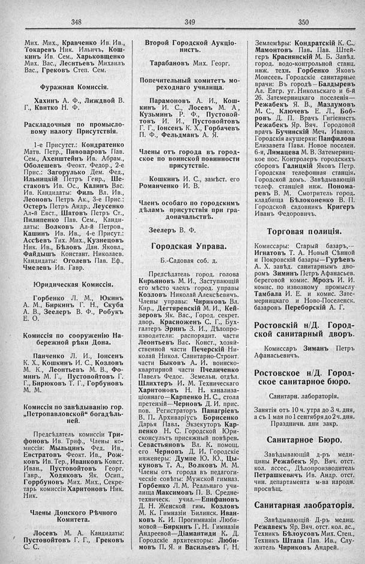

Лист источника 248
Скан

Распознанный текст
348
Мих. Мих., Кравченко Ив. Ив.,
Токаревъ Ник. Ильичъ, Кош-
кинъ Ив. Сем., Харьковщенко
Мих. Вас., Леснтьевъ Михаилъ
Вас., Грековъ Степ. Сем.
Фуражная Комиссія.
Хахинъ А. Ф., Лиждвой В.
Г., Квитко Н. Ф.
Раскладочныя по промысло-
вому налогу Присутствія.
1-е Присутст.: Кондратенко
Матв. Петр., Пивоваровъ Пав.
Сем., Ахенштейнъ Ив. Абрам.,
Оболешевъ Феокт. Федор., 2-е
Прис.: Загорулько Дем. Фед.,
Ильницкій Петръ Генр., Ше-
стаковъ Ив. Ос., Калинъ Вас.
Ив. Кандидаты: Филь Вл. Ив.,
Леоновъ Петръ Ак., 3-е Прис.:
Остеръ Петръ Андр., Леусенко
Ал-й Евст., Шатовъ Петръ Ст.,
Пилипенко Пав. Сем., Канди-
даты: Волковъ Ал-й Петров.,
Кашинъ Ив. Ив., 4-е Присут.:
Ассѣевъ Тих. Мих., Кузнецовъ
Ник. Ив., Бѣловъ Дан. Яковл.,
Файдышъ Констант. Николаев.
Кандидаты: Оголевъ Пав. Еф.,
Чмелевъ Ив. Гавр.
Юридическая Комиссія.
Горбенко Л. М., Юкинъ
А. М., Биркинъ Г. Н., Скуба
А. В., Зеелеръ В. Ф., Робукъ
Е. О.
Комиссія по сооруженію На-
бережной рѣки Дона.
Панченко Л. И., Іонсенъ
К. Х., Кошкинъ И. С., Козловъ
М. К., Леонтьевъ М. В., Фо-
минъ М. Г., Пустовойтовъ Г.
Г., Бирюковъ Т. Г., Горбуновъ
М. М.
Комиссія по завѣдыванію гор.
„Петропавловской“ богадѣль-
ней.
Предсѣдатель комиссіи Три-
фоновъ Ив. Триф., Члены ко-
миссіи: Мыльцинъ Фед. Ив.,
Евстратовъ Феокт. Ив., Рож-
ковъ Ив. Тер., Иванковъ Конст.
Иван., Пустовойтовъ Георг.
Гавр., Ходяковъ Як. Осип.,
Горрбуновъ Мих. Мих., Секре-
тарь комиссіи Харитоновъ Ник.
Ник.
Члены Донского Рѣчного
Комитета.
Лосевъ М. А. Кандидаты:
Пустовойтовъ Г. Г., Грековъ
С. С.
349
Второй Городской Аукціо-
нистъ.
Тарабановъ Мих. Георг.
Попечительный комитетъ мо-
реходнаго училища.
Парамоновъ А. И., Кош-
кинъ И. С., Лосевъ М. А,
Кузьминъ Р. Ф., Пустовой-
товъ И. И., Пустовойтовъ
Г. Г., Іонсенъ К. Х., Горбачевъ
П. Ф., Фельдманъ А. Я.
Члены отъ города въ город-
ское по воинской повинности
присутствіе.
Кошкинъ И. С., замѣст. его
Романченко И. В.
Членъ особаго по городскимъ
дѣламъ присутствія при гра-
доначальствѣ.
Зеелеръ В. Ф.
Городская Управа.
Б.-Садовая соб. д.
Предсѣдатель город. голова
Кирьяновъ М. И., Заступающій
его мѣсто членъ город. управы
Козловъ Николай Алексѣевичъ.
Члены управы: Чириковъ Вл.
Кир., Дегтяревскій М. И., Кей-
зеровъ Як. Вас., Город. секрет.
двор. Красноженъ С. Г., Бух-
галтеръ Эринъ З. И., Дѣлопро-
изводители: распорядит. части
Леонтьевъ Вас. Конст., хозяй-
ственной части Печерскій Ни-
колай Никол. Санитарно-Строит.
части Быковъ А. И. воинско-
квартирной части Пчеличенко
Павелъ Федос. Земельн. отдѣл.
Шлихтеръ И. М. Техническаго
Харитоновъ Н. Н. канализа-
ціоннаго—Карпенко Н. С., стола
претензій—Черновъ Д. И. прис.
пов. Регистраторъ Панагріевъ
В. П. Архиваріусъ Борисенко
Дарья Павл. Экзекуторъ Кар-
пенко Н. С. Городской Юри-
сконсультъ присяжный повѣрен.
Севастьяновъ Вл. К. помощ.
его Черновъ Д. И. Городскіе
инженеры: Думпе Ю. Ю., Цы-
куновъ Т. А., Волковъ М. М.
Члены отъ города въ педагоги-
ческіе совѣты: Мужской гимназ.
Горбенко Л. М. Реальнаго учи-
лища Максимовъ П. В. Средне-
техническ. учил.—Епифановъ
Д. Н. Женской гим. Козловъ
М. К. Гимназіи Билинск. Иван-
ковъ К. И. Прогимназіи Люби-
мовой—Биркинъ Г. Н. Гимназіи
Андреевой—Діамантиди К. Д.
Городскіе архитекторы: Люби-
мовъ П. Я. и Васильевъ Г. Н.
350
Землемѣры: Кондратскій К. С.,
Мамонтовъ Пав. Пав. Штей-
геръ Краснянскій М. Б. Завѣд.
город. водо-контрольной станц.
инж. техн. Горбенко Яковъ
Моисеев. Городскіе санитарные
врачи: Въ городѣ—Балдыревъ
Ал. Евгр. уг. Никольскаго и 6-й
26. Затемерницкаго поселенія—
Режабекъ Я. В., Мазлумовъ
М. С., Ключевъ Е. Л., Боб-
ровъ Д. П. Врачъ Гигіенистъ
Режабекъ Яр. Вяч. Городовой
врачъ Бучинскій Меч. Иванов.
Городскія акушерки: Панфилова
Елизавета Павл. Новое поселен.
6-я, Лимацева М. В. Затемерниц-
кое пос. Контролеръ городскихъ
сборовъ Галицкій Яковъ Петр.
Городская телефонная станція.
Городской домъ. Завѣдывающій
телеф. станціей инж. Понома-
ревъ В. М. Смотритель город.
кладбища Бѣлоконенко В. П.
Городской садовникъ Кригеръ
Иванъ Федоровичъ.
Торговая полиція.
Комиссары: Старый базаръ,--
Игнатовъ Т. А. Новый Сѣнной
и Покровскій базары—Гурѣевъ
А. Х. завѣд. санитарнымъ дво-
ромъ Зиминъ Петръ Афанасьев.
береговой комис. Мрозъ И. И.
комис. по извозному промыслу
Тамбала И. Е. и комис. Зате-
мерницкаго и Ново-Поселенск.
базаровъ Переборскій А. Г.
Ростовскій н/Д. Город-
ской санитарный дворъ.
Комиссаръ Зиманъ Петръ
Афанасьевичъ.
Ростовское н/Д. Город-
ское санитарное бюро.
Санитарн. лабораторія.
Занятія отъ 10 ч. утра до 3 ч. дня,
а съ 1 мая по 1 сентября до 2 ч. дня.
Праздничн. дни закр.
Санитарное Бюро.
Завѣдывающій д-ръ меди-
цины Режабекъ Яр. Вяч. отст.
кол. ассес., Дѣлопроизводитель
Петрашкевичъ Ив. Андр. отст.
чин. департамента м-ва народн.
просвѣщ.
Санитарная лаобраторія.
Завѣдывающій Д-ръ медиц.
Режавекъ Яр. Вяч. отст. кол. ас.,
Техникъ Бѣлоусовъ Мих. Степ.,
Техникъ Штапа Пав. Ив., Слу-
житель Чириковъ Андрей.